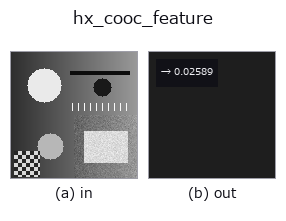

halcon_ext op• Datenarten: image → feature
• Aufruf: fullseye.apply(img, "hx_cooc_feature", a=0.5, b=0.5) (das 2-D-Modell ist ein Bild plus zwei skalare Regler a,b∈[0,1])
• HALCON-Äquivalent: cooc_feature_image (Bedeutung und Parameter sind in der HALCON-Referenz nachzulesen)

*Die Abbildung ist die tatsächliche Ausgabe auf einer synthetischen 128×128-Eingabe. Links Eingabe, rechts Ausgabe. Punktwolken als Draufsicht-Streudiagramm (Helligkeit = z), 1-D-Reihen als Linie, Volumen als Maximum-Projektion entlang z, Videos als mittleres Bild, komplexe Bilder als Betrag; Rückgabewerte, die kein Bild ergeben, werden als Werte gezeigt.*
Regler a durchfahren (0,1 / 0,5 / 0,9, der andere Regler auf Standard):
▸ hx_cooc_feature: knob a sweep (docs site)
Regler b durchfahren (0,1 / 0,5 / 0,9, der andere Regler auf Standard):
▸ hx_cooc_feature: knob b sweep (docs site)
Quantisiert, baut die horizontale Kookkurrenzmatrix im Abstand d und liefert den Haralick-Kontrast (a = Abstand, b wählt den Winkel).
> Die ausführliche Beschreibung unten ist der Originaltext — Zusammenfassung und Überschriften sind übersetzt.
入力 `v([0,1] 画像)を int(v*8) で 8 階調に量子化し(clip で 0〜7)、距離 d` だけ離れた画素対の
出現回数を 8×8 の共起行列にして転置を足し(対称化)、総和で割って確率にする。返すのは Haralick の
contrast `sum p(i,j)*(i-j)^2 を最大値 (8-1)^2 = 49 で割った np.float64`(値域 [0,1])。
• `a → 距離 d = 1 + int(a*3)`(1〜4 画素)。
• `b → 方向。b < 0.5 で水平(同じ行で d 列右)、b >= 0.5 で垂直(同じ列で d` 行下)。斜め方向は無い。
• 画像の幅(または高さ)が `d` 以下で画素対が 1 つも作れないと総和 0 とみなして 0.0 を返す(例外は出さない)。
値が大きいほど隣接画素の階調差が大きい(粗い/コントラストの高いテクスチャ)。8 階調のため微妙な濃淡差は同じ
階調に潰れる。16 階調の `skimage 実装 cooc_feature_matrix` とは階調数・正規化が異なり数値は一致しない。
前段に `hx_gabor や mean_image` など画像 op、後段は feature として比較・しきい値に使う。
• Leitfaden zur Familie gallery2d_halcon_ext
• Katalog der Beispieldaten (Download-URLs / Lizenzen) — 2-D nutzt skimage.data (BSD/Public Domain) plus synthetische Bilder, 3-D nennt Download-URLs echter Datenquellen (Stanford, PDS, …).
• Herkunft und Literatur der Operatoren — die Quellen der Forschung/Verfahren, auf denen diese Operatorfamilie beruht.
• Der kanonische Algorithmus (Autor, Jahr) und seine Anwendungen stehen im Familienleitfaden oben.
Das Programm unten ist nachweislich lauffähig (gleiche Eingabe wie die Abbildung). In der Studio-Hilfe wird dieser Block zu Schaltflächen, die es sofort laden und ausführen.
hx_cooc_feature 0.50 0.50
▸ Load this pipeline · Load & run
• gallery2d_halcon_ext — py -3.11 examples/gallery2d_halcon_ext.py
feature als Eingabe)halcon_ext)hx_gen_circle · hx_gen_ellipse · hx_gen_rectangle2 · hx_gen_checker_region · hx_gen_grid_region · hx_gabor · hx_fit_surface1 · hx_fit_surface2
*Provenance: ops.py — 2D Operator-Registry. Diese Notiz wird von tools/opdocs.py md erzeugt (nicht von Hand bearbeiten).*
© 2026 Kazufumi Furuse — Fullseye operator documentation. Licensed under Apache-2.0.
{kind=link}
{kind=link}